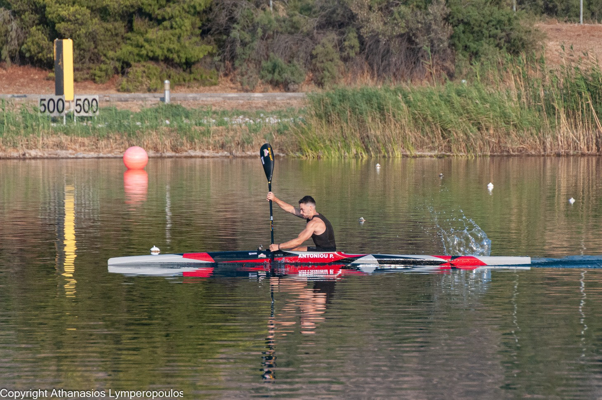
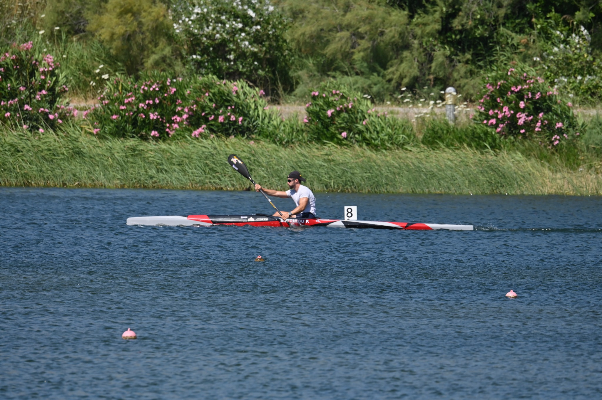
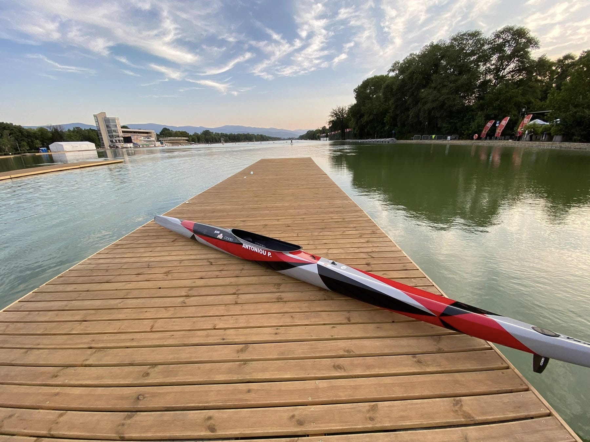
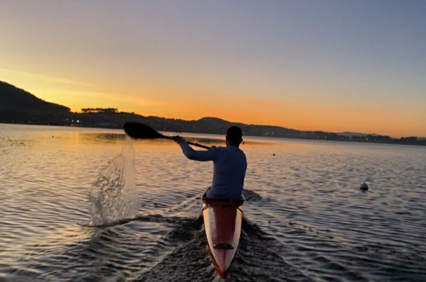
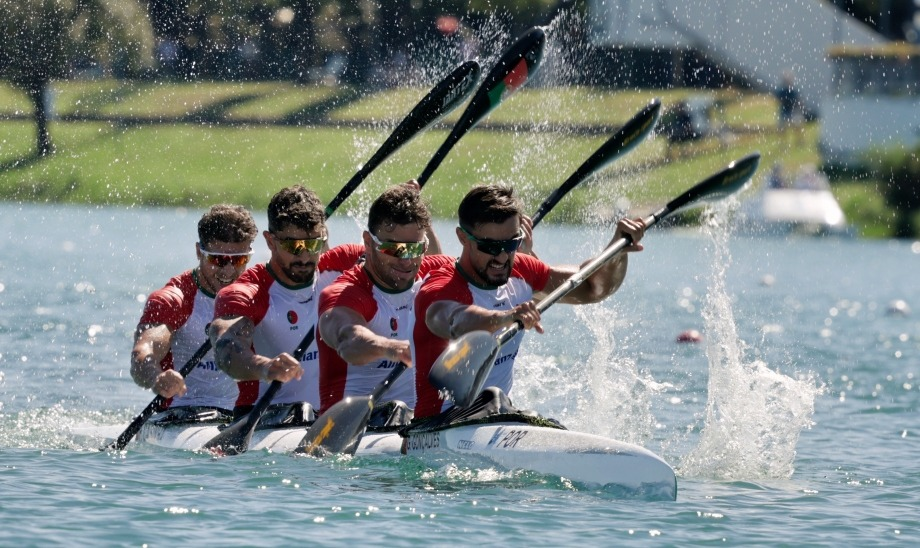
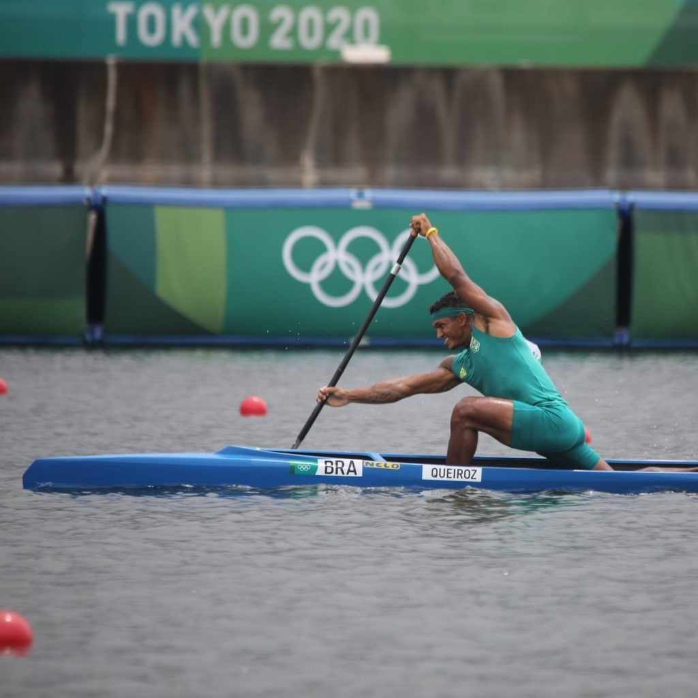

Αγωνιστικό Τμήμα
Στόχος: αγωνιστική εξέλιξη, συμμετοχή σε διοργανώσεις και ανάπτυξη αθλητών.
ΝΑΥΤΙΚΟΣ ΟΜΙΛΟΣ ΠΑΜΒΩΤΙΔΟΣ
Αγωνιστικό Canoe Kayak, ακαδημίες και προπόνηση στη λίμνη Παμβώτιδα.

Το kayak sprint είναι επίσημο ολυμπιακό άθλημα ταχύτητας. Διεξάγεται σε ήρεμα, επίπεδα νερά, όπως λίμνες ή ήρεμους ποταμούς. Ο αθλητής κάθεται μέσα στο σκάφος κοιτώντας μπροστά και χρησιμοποιεί διπλό κουπί, με στόχο να τερματίσει πρώτος σε ευθεία διαδρομή.
Το κανόε είναι σκάφος όπου ο αθλητής είναι γονατιστός πάνω σε ειδικό μαξιλαράκι. Χρησιμοποιεί κουπί με μία κουτάλα, ανάλογο με το ύψος του, και κωπηλατεί μόνο από τη μία πλευρά. Το κανόε δεν έχει πηδάλιο· η πορεία κρατιέται με το κουπί.
Στόχος: αγωνιστική εξέλιξη, συμμετοχή σε διοργανώσεις και ανάπτυξη αθλητών.
Εισαγωγή στο άθλημα με ασφαλή σκάφη εκμάθησης και σταδιακή ανάπτυξη τεχνικής.




